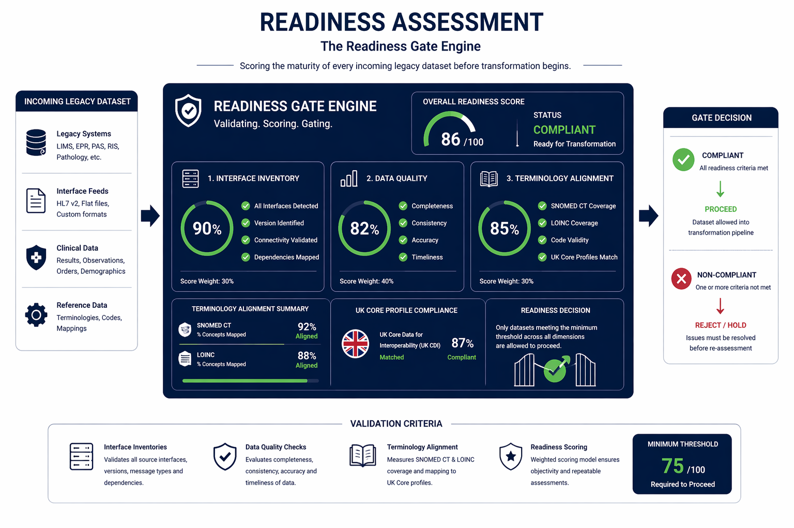
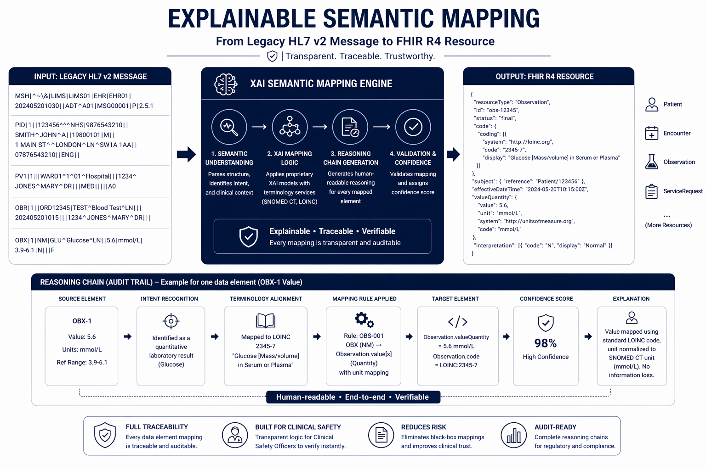
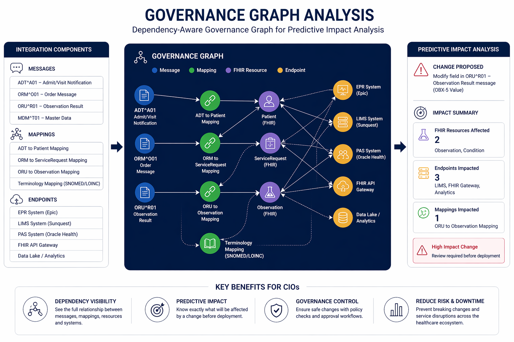
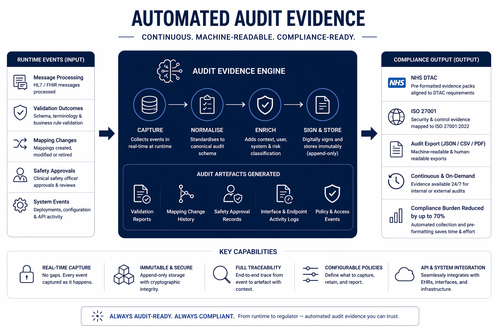
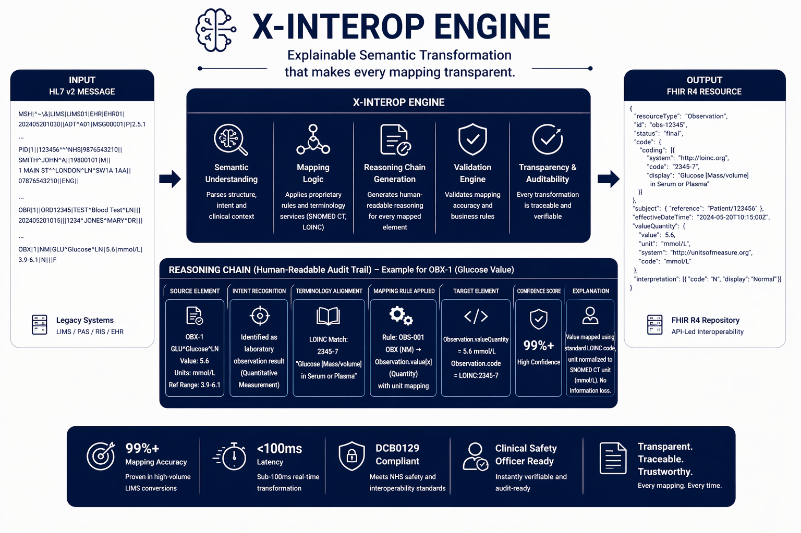
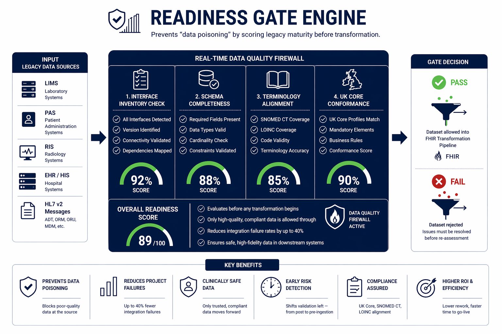
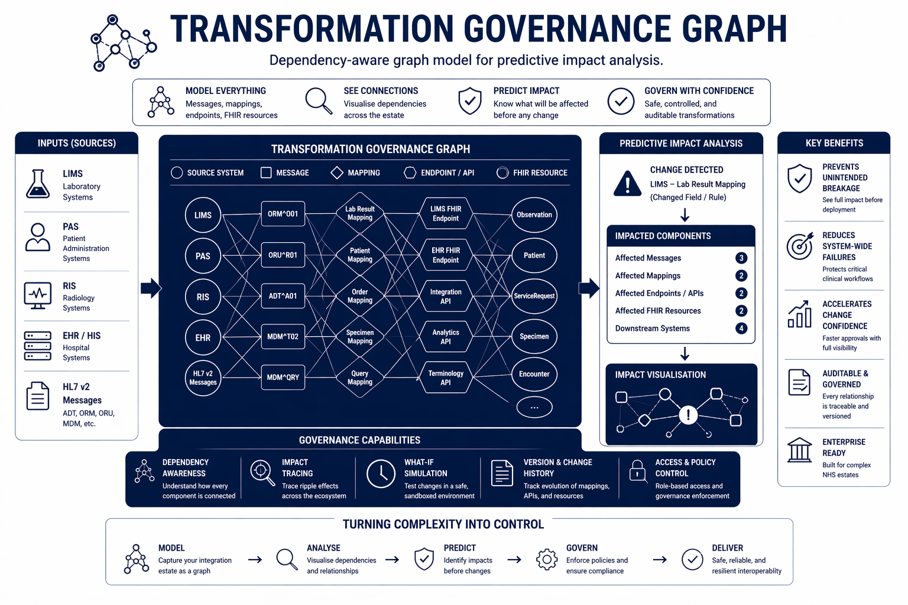
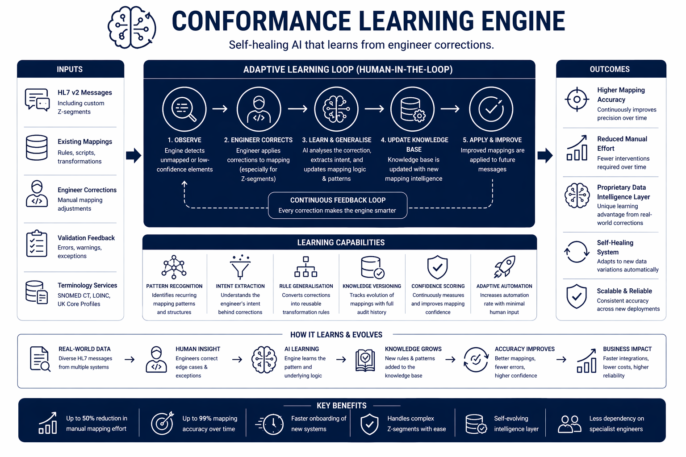
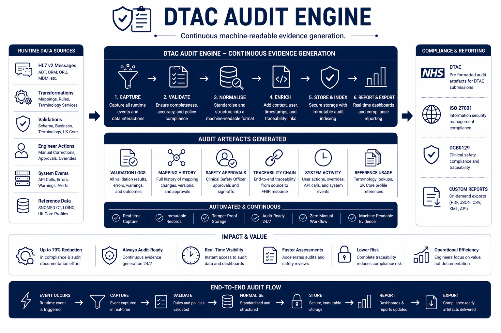
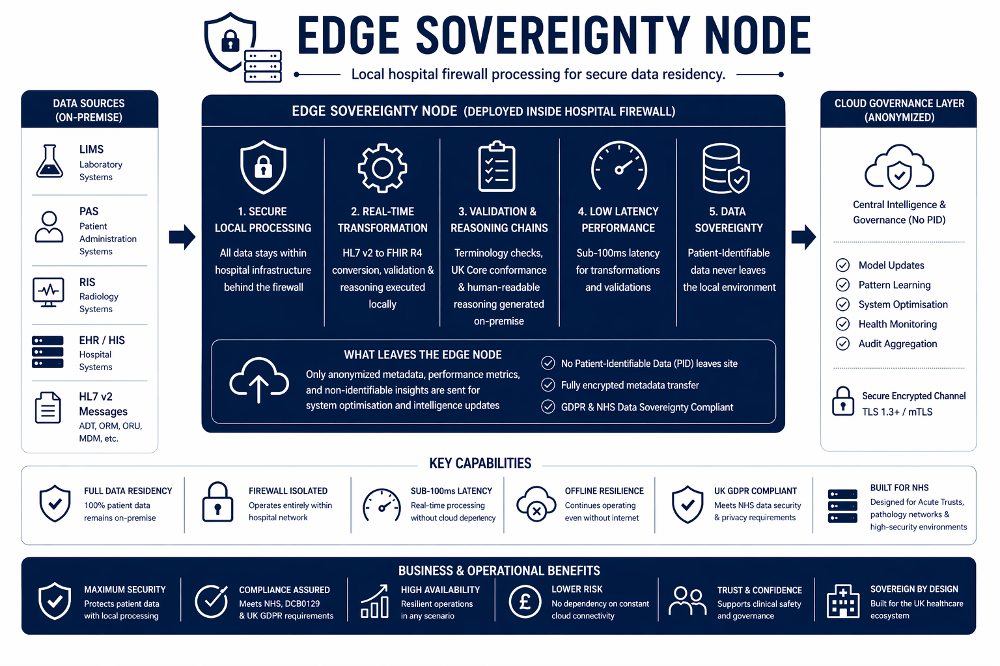

Interop Intelligence bridges the "Legacy Debt" gap governing the transition from legacy HL7 v2 data standards to modern FHIR R4 ecosystems with Explainable AI, Readiness Gates, and a Dependency-Aware Governance Graph built specifically for the NHS.
Interop Intelligence introduces a pioneering "Interoperability Intelligence Layer" designed to govern and accelerate the transition of healthcare data from legacy standards (HL7 v2) to modern, API-led FHIR ecosystems. By combining proprietary Explainable AI (XAI), automated readiness assessment, and graph-based dependency modelling, the platform bridges the gap that currently hinders the UK healthcare sector's digital transformation.
Unlike traditional integration engines that act as passive "black-box" pipes, Interop Intelligence functions as an intelligent governance system interpreting legacy data streams, validating them against UK Core profiles in real-time, and generating human-readable "Reasoning Chains" to explain every transformation.
Fully aligned with NHS Digital, DTAC, DCB0129, and the 2026 FHIR R4 mandate transforming integration from a high-risk engineering project into a governed, automated, and trusted utility for a truly connected NHS.
14+ years as a Principal Integration Engineer and Lead Interface Architect within the NHS and private healthcare sectors.
Holds an MSc in Data Science (Kingston University) with deep expertise in HL7 V2.x, FHIR R4, and major integration engines — Mirth, Rhapsody, and Cerner — driving the vision to solve the "Legacy Debt" crisis through ethical, explainable, and inclusive AI.
Her front-line NHS experience directly informs the platform's Explainable Semantic Transformation Engine, achieving 99.2%+ accuracy in LIMS-to-FHIR stress tests.
Contact →7+ years as a Governance Data Analyst, designing automated reporting solutions and strengthening data quality within regulated financial and enterprise environments.
Holds an MSc in Data Science (Kingston University) with expertise in Power BI, Snowflake, SQL, and Power Automate — building governance dashboards and automation pipelines across William Hill, Apple, and Ameriprise Financial (via TCS).
Her specialisation in data governance, risk controls, and reporting automation underpins Interop Intelligence's compliance monitoring, KPI frameworks, and audit-ready data infrastructure.
Contact →Every legacy data stream passes through Interop Intelligence 's four-stage governance pipeline converting fragmented hospital data into real-time FHIR-ready resources with full explainability, readiness gating, and automated compliance evidence.

The "Readiness Gate" engine scores the maturity of every incoming legacy dataset validating interface inventories, data quality, and SNOMED CT/LOINC terminology alignment against UK Core profiles before transformation begins. Only compliant data passes through.

Proprietary XAI logic translates legacy HL7 v2 messages into FHIR R4 resources. For every individual data element converted, a human-readable "Reasoning Chain" is generated providing a traceable audit trail that Clinical Safety Officers can verify instantly.

All integration components messages, mappings, and endpoints are modelled as a dependency-aware governance graph. This enables Predictive Impact Analysis: CIOs can see exactly which FHIR resources will be affected by a change before deployment.

Continuous, machine-readable "Audit Artefacts" are generated during runtime including validation outcomes, mapping change histories, and safety approval states. Pre-formatted for NHS DTAC and ISO 27001, reducing the compliance burden by up to 70%.
Each module is purpose-built for the UK's clinical regulatory landscape combining explainability, readiness control, adaptive learning, and edge sovereignty into a single, unified intelligence platform.

Explainable Semantic Transformation that makes every mapping transparent.
The X-Interop Engine replaces traditional "black-box" integration with fully explainable semantic transformation. Every HL7 v2 to FHIR R4 conversion is accompanied by a human-readable "Reasoning Chain" that documents intent, mapping logic, terminology alignment (SNOMED CT / LOINC), and validation outcomes. This ensures Clinical Safety Officers can instantly verify transformations against DCB0129 safety requirements eliminating the need for manual documentation. The engine has demonstrated 99%+ mapping accuracy in high-volume LIMS conversions with sub-100ms latency, enabling safe, real-time interoperability across NHS systems.

Prevents "data poisoning" by scoring legacy maturity before transformation.
The Readiness Gate Engine acts as a real-time "data quality firewall" preventing incomplete, inconsistent, or non-compliant legacy datasets from entering modern FHIR ecosystems. It evaluates interface inventories, schema completeness, terminology alignment, and UK Core conformance before allowing transformation. This proactive gating mechanism reduces integration project failure rates by up to 40% and ensures only clinically safe, high-fidelity data progresses into downstream systems. Unlike traditional pipelines, this engine shifts validation from post-processing to pre-ingestion eliminating downstream risk.

Dependency-aware graph model for predictive impact analysis.
The Transformation Governance Graph models the entire interoperability ecosystem as a dependency-aware network linking messages, mappings, endpoints, and FHIR resources into a single, queryable structure. This enables Predictive Impact Analysis: when a change occurs in a legacy system (e.g., LIMS or PAS), the platform instantly identifies all affected downstream resources and APIs before deployment. For CIOs and integration leads, this transforms interoperability from fragile "pipes" into a resilient, governed infrastructure reducing system-wide failures and ensuring safe, controlled change management across complex NHS estates.

Self-healing AI that learns from engineer corrections.
The Adaptive Conformance Learning Engine continuously improves mapping accuracy through a secure human-in-the-loop feedback loop. When engineers correct mappings especially in non-standard HL7 "Z-segments" the system learns and updates its internal transformation logic. Over time, this creates a proprietary "data intelligence layer" that reduces reliance on specialist integration engineers and increases automation accuracy across new deployments. This capability transforms interoperability from static configuration into a self-evolving system aligned with real-world clinical data complexity.

Continuous machine-readable evidence generation.
The DTAC Audit Engine automatically generates continuous, machine-readable audit artefacts during runtime including validation logs, mapping histories, safety approvals, and transformation traceability. These artefacts are pre-formatted for NHS DTAC, ISO 27001, and DCB0129 compliance, enabling organizations to remain in a constant "audit-ready" state without manual documentation overhead. This reduces compliance workload by up to 70% and transforms regulatory reporting from a retrospective burden into a real-time, automated process.

Local hospital firewall processing for secure data residency.
The Edge Sovereignty Node enables secure, on-premise data processing within hospital infrastructure ensuring that patient-identifiable data never leaves the local firewall. All transformations, validations, and reasoning chains are executed locally with sub-100ms latency, while only anonymized metadata is used for system optimization. This architecture guarantees full UK GDPR compliance, supports NHS data sovereignty requirements, and ensures resilience even during cloud connectivity disruptions making it suitable for high-security environments such as Acute Trusts and pathology networks.
An Interop Intelligence Professional subscription represents a fraction of the cost of a failed NHS integration project delivering continuous governance, compliance automation, and clinical safety year-round.
For small private clinics or specialized laboratories starting their FHIR transition journey.
£499For medium-sized hospital groups, regional diagnostic centres, and NHS Trust departments.
£1,450For large Acute Trusts and Integrated Care Boards managing complex regional data ecosystems.
CustomWhether you are an NHS Trust, Integrated Care Board, private hospital group, diagnostic laboratory, MedTech startup, or technology integration partner we would like to hear from you. Contact us to arrange a demonstration, discuss Lighthouse pilot opportunities, or explore licensing and partnership options.